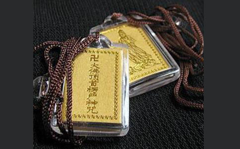

一、论究竟阿难。是佛顶光聚，悉怛多般怛罗，秘密伽陀，微妙章句。出生十方一切诸佛。十方如来，因此咒心，得成无上正遍知觉。
二、论除魔十方如来，执此咒心，降伏诸魔，制诸外道。
三、论功德此诸众生，纵其自身不作福业，十方如来所有功德，悉与此人。由是得于恒河沙阿僧祇不可说不可说劫，常与诸佛同生一处。无量功德，如恶叉聚。同处熏修，永无分散。
四、论灭罪 阿难。是善男子持此咒时。设犯禁戒于未受时。持咒之后。众
阿难。若有众生，从无量无数劫来，所有一切轻重罪障，从前世来未及忏悔。若能读诵书写此咒，身上带持，若安住处庄宅园馆。如是积业，犹汤销雪。不久皆得悟无生忍。
五、论所愿 复次阿难。若有女人，未生男女，欲求孕者。若能至心忆念斯咒。或能身上带此悉怛多般怛啰者。便生福德智慧男女。求长命者，即得长命，欲求果报速
命终之后，随愿往生十方国土。必定不生边地下贱，何况杂形。
七、 说是语已。会中无量百千金刚，一时佛前合掌顶礼，而白佛言：如佛所说。我当诚心保护如是修菩提者。尔时梵王、并天帝释、四天大王，亦于佛前同时顶礼，而白佛言：审有如是修学善人，我当尽心至诚保护，令其一生所作如愿。复有无量药叉大将、诸罗刹王、富单那王、鸠槃茶王、毗舍遮王、频那夜迦、诸大鬼王、及诸鬼帅，亦于佛前合掌顶礼。我亦誓愿护持是人，令菩提心速得圆满。复有无量日月天子，风师雨师，云师雷师，并电伯等，年岁巡官，诸星眷属，亦于会中顶
十方如来，乘此咒心，坐宝莲华，应微尘国。
九、论十方如来，含此咒心，于微尘国转大法-轮。
十、论受记十方如来，持此咒心，能于十方摩顶授记。自果未成，亦于十方蒙佛授记。
十一、论大慈大悲救苦救难 依此咒心，能于十方拔济群苦。所谓
十方如来，随此咒心，能于十方事善知识，四威仪中供养如意。恒沙如来会中，推为大法王子。
十三、论救亲十方如来，行此咒心，能于十方摄受亲因，令诸小乘闻秘密藏，不生惊怖。
十四、论成佛十方如来，诵此咒心，成无上觉，坐菩提树，入大涅槃。
十五、论成佛后 十方如来，传此咒心，于灭度后付佛
阿难。若诸世界，随所国土所有众生，随国所生桦皮贝叶纸素白（迭毛）书写此咒，贮于香囊。是人心昏，未能诵忆。或带身上。或书宅中。当知是人尽其生年，一切诸毒所不能害。
十七、论得受 阿难。我今为汝更说此咒，救护
阿难当知。是咒常有八万四千那由他恒河沙俱胝金刚藏王菩萨种族。一一皆有诸金刚众而为眷属，昼夜随侍。
十九、论诵持此咒直到最后成佛一切处所生身从第一劫乃至后身，生生不生药叉罗刹，及富单那，迦吒富单那，鸠槃茶，毗舍遮等，并诸饿鬼，有形无形、有想无想、如是恶处。是善男子，若读若诵、若书若写、若带若藏，诸色供养，劫劫不生贫穷下贱不可乐处。
二十、论清净是故能令破戒之人，戒根清净。未得戒者，令其得戒。未精进者，令得精进。无智慧者，令得智慧。不清净者，速得清净。不持斋戒，自成斋戒。
二十一、论救灾 在在处处，国土众生，随有此咒，天龙
若复有人，身具四重十波罗夷，瞬息即经此方他方阿鼻地狱，乃至穷尽十方无间，靡不经历阿难。若复有人，遍满十方所有
阿难答言：虚空无尽，珍宝无边。昔有众生施佛七钱，舍身犹获转轮王位。况复现前虚空既穷，佛土充遍，皆施珍宝。穷劫思议，尚不能及。是福云何更有边际。
佛告阿难。诸佛如来，语无虚妄。若复有人，身具四重十波罗夷，瞬息即经此方他方阿鼻地狱，乃至穷尽十方无间，靡不经历。能以一念将此法门，于末劫中开示未学。是人罪障，应念销灭。变其所受地狱苦因，成安乐国。得福超越前之施人，百倍千倍千万亿倍，如是乃至算数譬喻所不能及。